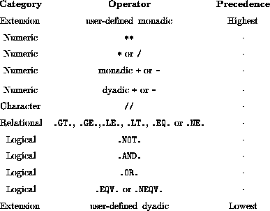

Next: Precedence Example
Up: Expressions and Assignment
Previous: Intrinsic Logical Operations
{

}
Note:
-
in an expression with no parentheses,
the highest precedence operator is combined with its
operands first;
- in contexts of equal precedence left to right evaluation
is performed except for **.
For more information, click here

Next: Precedence Example
Up: Expressions and Assignment
Previous: Intrinsic Logical Operations
Adam Marshall ©University of Liverpool, 1996
Tue Nov 26 19:51:50 GMT 1996